Perfect for beginners
One Hour Lesson
$80 One hour lesson on an automatic car, including pick-up and drop-off. Book LessonPractical Driving Lessons in Liverpool Built Around Your Pace, Your Goals and Local Roads You'll Actually Use
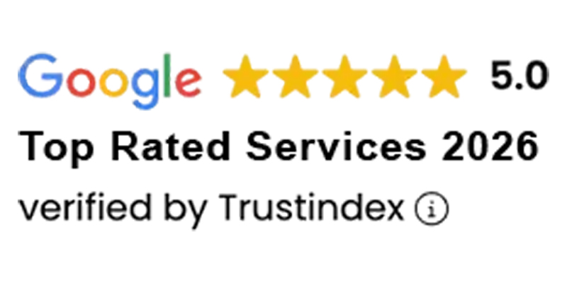
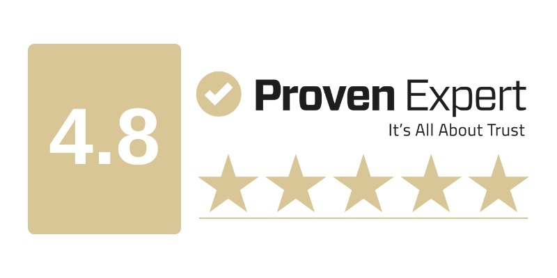
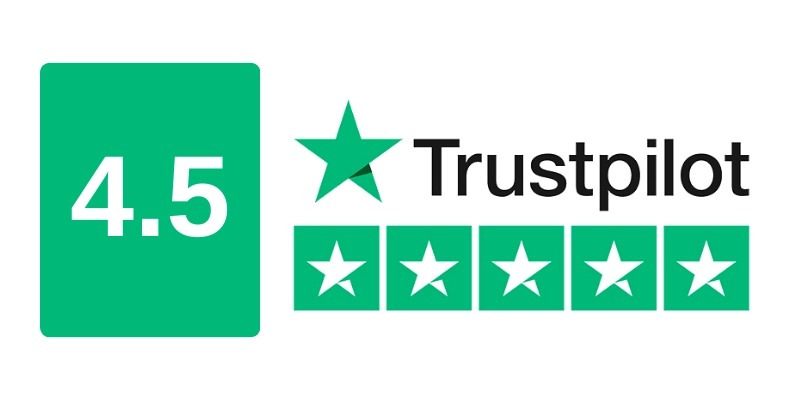
One Hour Lesson
$80 One hour lesson on an automatic car, including pick-up and drop-off. Book LessonTwo Hour Lesson
$150 Two hour lesson on an automatic car, including pick-up and drop-off. Book Lesson5 Hour Lessons Package
$370 Five hour lessons package, including pick-up and drop-off. Buy Package10 Hour Lessons Package
$700 Ten hour lessons package, including pick-up and drop-off. Buy PackageLearner drivers student reviews
"The driving instructor was very patient and professional in the way he explained parking, roundabouts and local test routes. I got my Ps with much more confidence than I expected."
"Clear instructions, calm coaching and structured lessons made a huge difference. The local Liverpool driving test practice helped me understand exactly what I needed to improve."
"Professional, trustworthy and patient from the first lesson. The guidance around observation checks, lane changes and hazard perception gave me much better road confidence."
"Every lesson had a clear goal. I knew what I was improving, why it mattered and what to practise before the next drive with my parents."
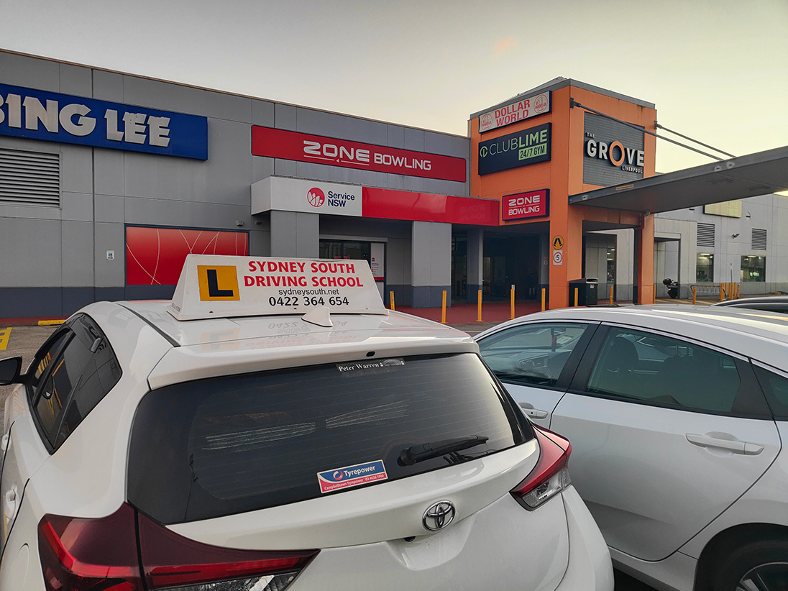
Trusted driving lessons Liverpool
Students know which skill matters today, whether that is reverse parking, lane changes, observation checks, hazard perception or local test-route control.
Parking setup, roundabout timing, road positioning and speed control are broken down until the learner can repeat them confidently.
Pressure makes anxious students worse. Calm, direct coaching helps them drive better, learn at their own pace and understand what the road is asking from them.
The focus stays on safer habits, stronger decision-making and real readiness for Liverpool roads, the Service NSW driving test and a safer long-term transition from Ls to Ps.
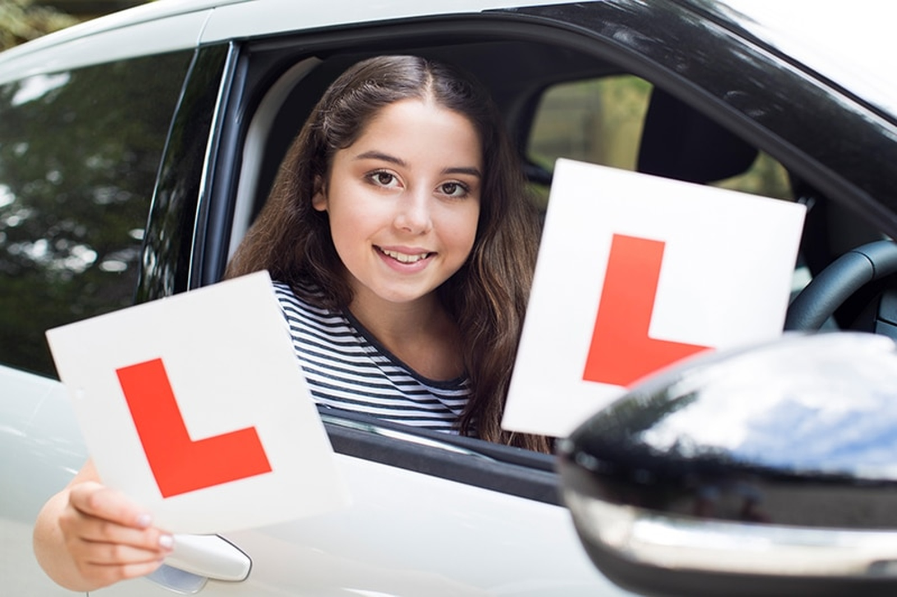
About us
Driving School Liverpool Center helps learner drivers and parents move from uncertainty to confidence with patient automatic lessons, practical road coaching and a clearer plan for each stage of the learning process.
Lessons are structured around the roads students actually use, including Liverpool traffic, school zones, roundabouts, parking practice, busy intersections and the local conditions that matter before a Service NSW driving test.
Full driving lesson coverage
We offer beginner driving lessons, automatic driving lessons, test preparation, logbook hours, refresher lessons and nervous driver support across Liverpool.
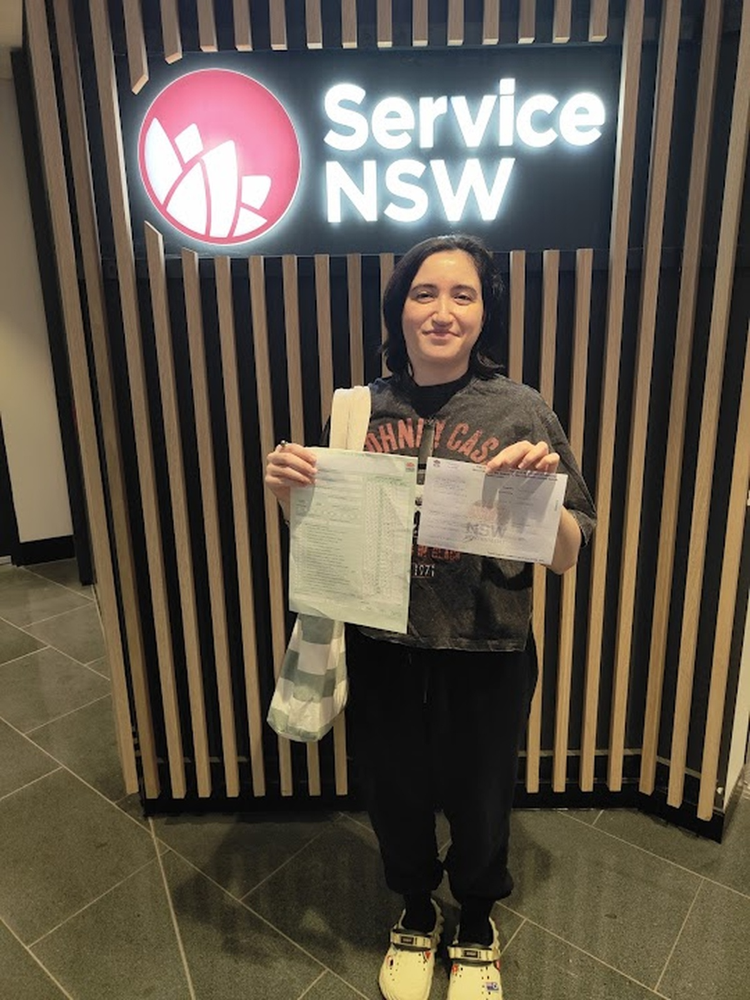
Built for first-time learners who need calm coaching on steering control, mirror checks, braking, road positioning and quiet residential practice before moving into Liverpool traffic. Structured tuition helps each student progress at their own pace.
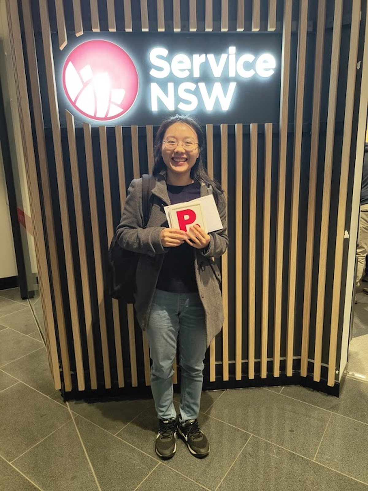
Ideal for students who want to focus on observation checks, hazard perception, lane changing, roundabout navigation and smoother decision-making without manual gear pressure. This includes beginner learners, nervous drivers and adult learners returning to the road.
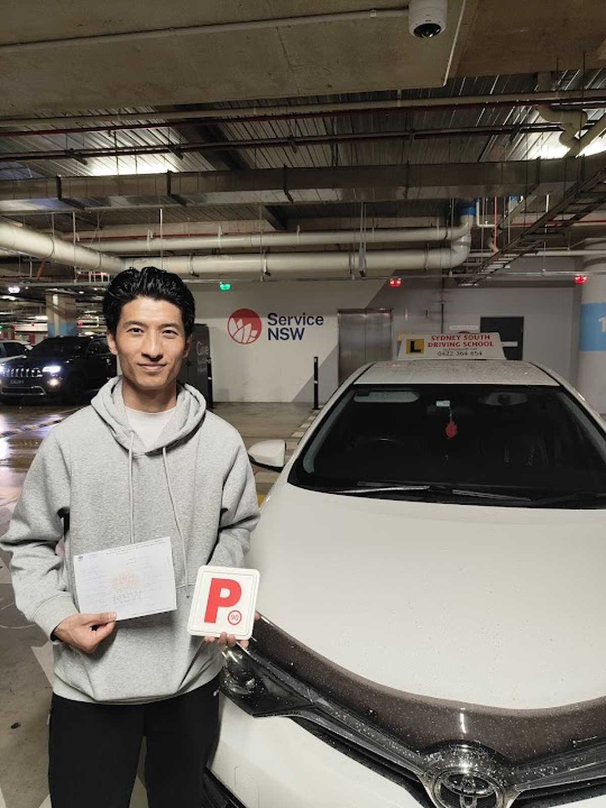
Pre-test refresher lessons focus on the Service NSW driving test, local test routes, school zones, busy intersections, kerbside stops and repeatable routines for calmer test-day control. Test car hire and route warm-up planning can be built into this support.
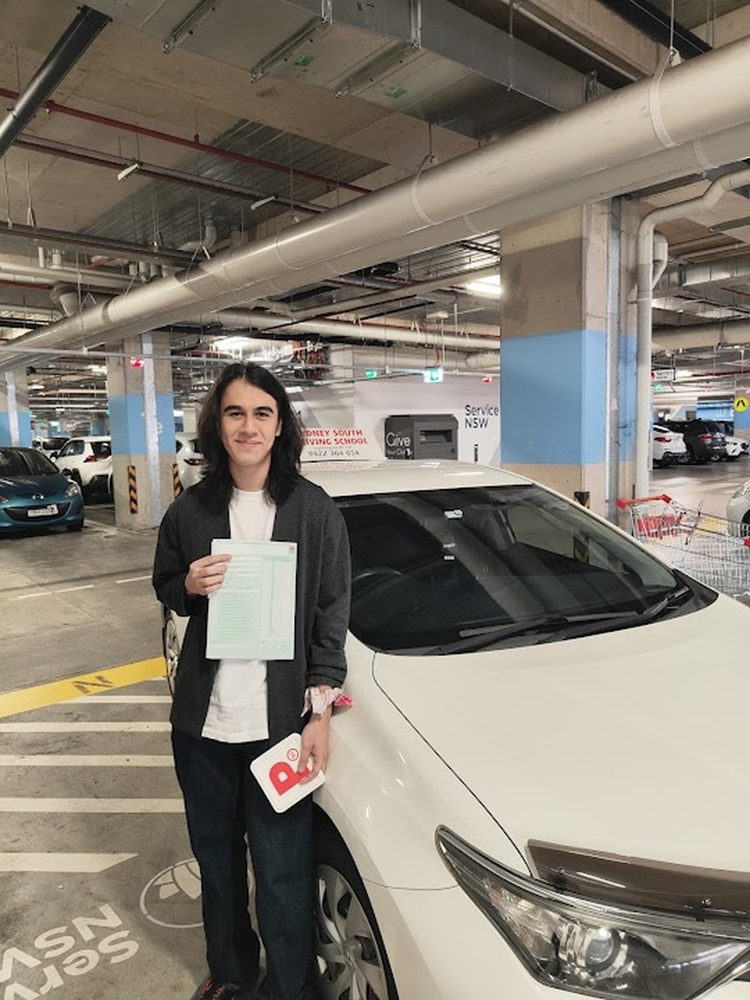
Structured learner driver lessons help students record useful practice across Liverpool, Moorebank and Warwick Farm while improving merging, observation, parking and road positioning. Every lesson is meant to build safer habits, not just time behind the wheel.
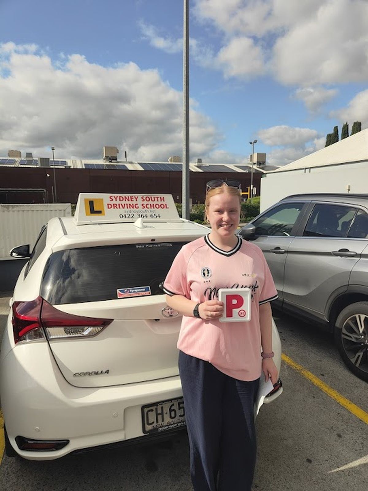
Refresher lessons support adult learners, aged and retraining students, and international licence holders who need help with NSW road rules, local speed management, lane discipline and confidence in Sydney South traffic.
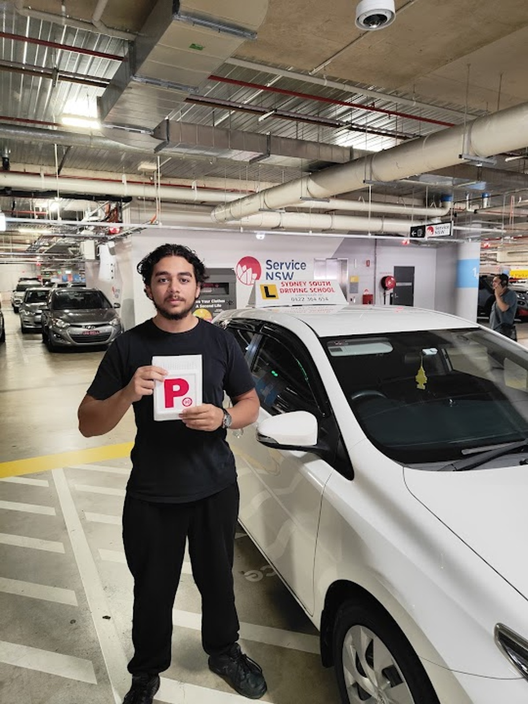
Nervous drivers get patient, step-by-step guidance with reverse parking, three-point turns, roundabouts, school-zone timing and the local habits needed to drive safely for life. Lessons can also cover hazard perception and defensive driving decision-making.
Lesson packages
Choose from flexible one-hour lessons, longer practice sessions and value packages built to support beginners, nervous drivers, logbook hours and local driving test preparation.
Perfect for beginners
$80One hour lesson on an automatic car, including pick-up and drop-off.
Most popular
$150Two hour lesson on an automatic car, including pick-up and drop-off.
Save $30
$370Five hour lessons package, including pick-up and drop-off.
Best value
$700Ten hour lessons package, including pick-up and drop-off.
One package. Show up. Pass.
$770Eight hour lessons, one hour lesson on test day and car hire for the driving test.
Test-ready package
$220One hour lesson plus car hire for the driving test.
Real feedback videos
See how local learners built confidence, improved their driving and got ready for their test.
How it works
Confirm whether the student is a first-time learner, nervous driver, test-ready student, adult learner, international licence holder or someone needing retraining after time away from the road.
Select quieter residential routes, school zones, busy intersections or Liverpool test-route roads based on what the learner needs to improve.
Practise reverse parking, three-point turns, kerbside stops, merging, lane changing, roundabouts and observation checks until the routine feels steady.
Each lesson ends with direct feedback, signed logbook progress where relevant, and the next skill needed for safer driving, stronger test preparation and a more confident transition from Ls to Ps.
Service area
Lessons are built around the Liverpool road network learners actually use, with local pick-up and suburb-by-suburb coverage across the Liverpool branch service area.
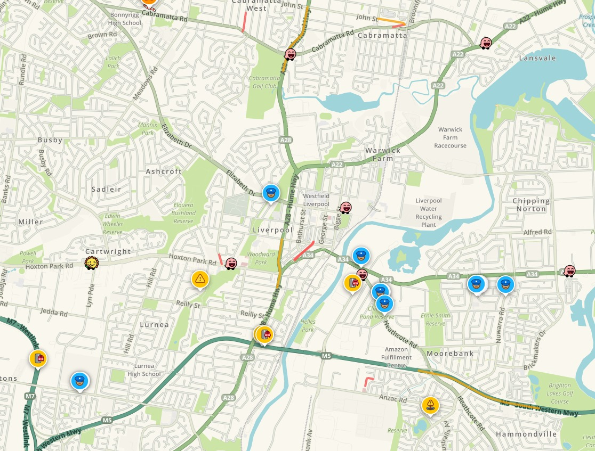
Local service area
We cover local learner routes, school zones, roundabouts, motorway approaches and Liverpool test-area roads that students use in real lessons.
Local pick-up, automatic lessons and Liverpool-area test preparation.
Structured learner lessons with practical road confidence building.
Support for local roads, Hume Highway approaches and test-route practice.
Beginner lessons, refresher sessions and calm automatic instruction.
Neighbourhood lessons with direct progression into Liverpool test-area driving.
Door-to-door service for learners building safer everyday driving habits.
Patient tuition for logbook hours, lane discipline and test readiness.
Automatic lessons tailored to beginners, nervous learners and parents.
Practical sessions covering merges, observation checks and quieter streets.
Road-rule focused instruction with structured skill progression.
Lessons that build confidence before moving into busier Liverpool traffic.
Pick-up and drop-off service for local learner drivers and adult students.
Road-positioning, parking and low-pressure automatic lesson support.
CBD-based training near local routes, intersections and the Service NSW area.
Lessons built around practical suburban driving and safer decision-making.
Local route preparation with merging, observation and traffic-flow coaching.
Door-to-door learner support with lessons paced to the student.
Flexible learner-driver lessons with structured coaching and test prep.
Automatic driving lessons for beginners, returners and nervous drivers.
Our accreditation and memberships
Recognised instructor associations, NSW learner-driver program badges and screening credentials that support trust for students and parents.
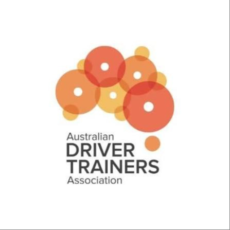
Industry association badge showing professional membership within the Australian driver trainer sector.
NSW Government accreditation badge signalling recognised standards for approved instruction services.
NSW Office of the Children's Guardian screening badge for work involving children and younger learners.
Transport for NSW badge reflecting alignment with current NSW road rules and learner-driver requirements.
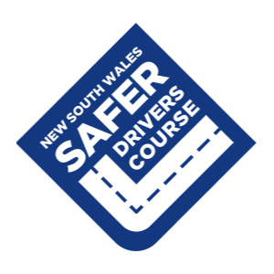
Official Safer Drivers Course program badge connected with hazard awareness and lower-risk learner driving habits.
Police check trust badge confirming background screening and adding reassurance for students and parents.
Liverpool driving questions
The Service NSW driving test centre on Elizabeth Drive, Liverpool is about a ten-minute drive from Moorebank via Newbridge Road in lighter traffic. We can pick up students in Moorebank, complete a short warm-up on the local test route and arrive with time to settle before the booking.
Yes. The Liverpool driving test commonly includes roundabouts, observation checks and lane positioning tasks that catch nervous learners off guard. We practise those specific roundabouts and approach speeds during every pre-test lesson.
Yes. NSW road rules allow learners to complete their logbook hours in an automatic vehicle. Our automatic driving lessons count toward logbook progress while improving hazard perception, parking control, lane changing and road positioning across Liverpool and nearby suburbs.
Most Casula students travel north on the Hume Highway toward Elizabeth Drive. The route is usually quick outside heavier traffic, but we plan for congestion, school-zone timing and test-day nerves so the learner arrives calm and ready.
Yes. Nervous driver lessons slow the pace down, repeat the key manoeuvres and build confidence through calm local repetition instead of rushed pressure. They are ideal for students needing extra practice with roundabouts, reverse parking and observation checks.
Yes. International licence holders often need refresher lessons on NSW road rules, school-zone timing, lane discipline, roundabout etiquette and local traffic conditions before they feel fully comfortable driving in Sydney South.
That is common. Many learners book focused sessions for reverse parking, three-point turns, kerbside stops, lane changing, merging and roundabout navigation before moving into broader Liverpool driving test preparation.
We help Liverpool learners, nervous drivers, parents and test-ready students through the week.